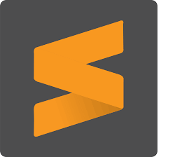
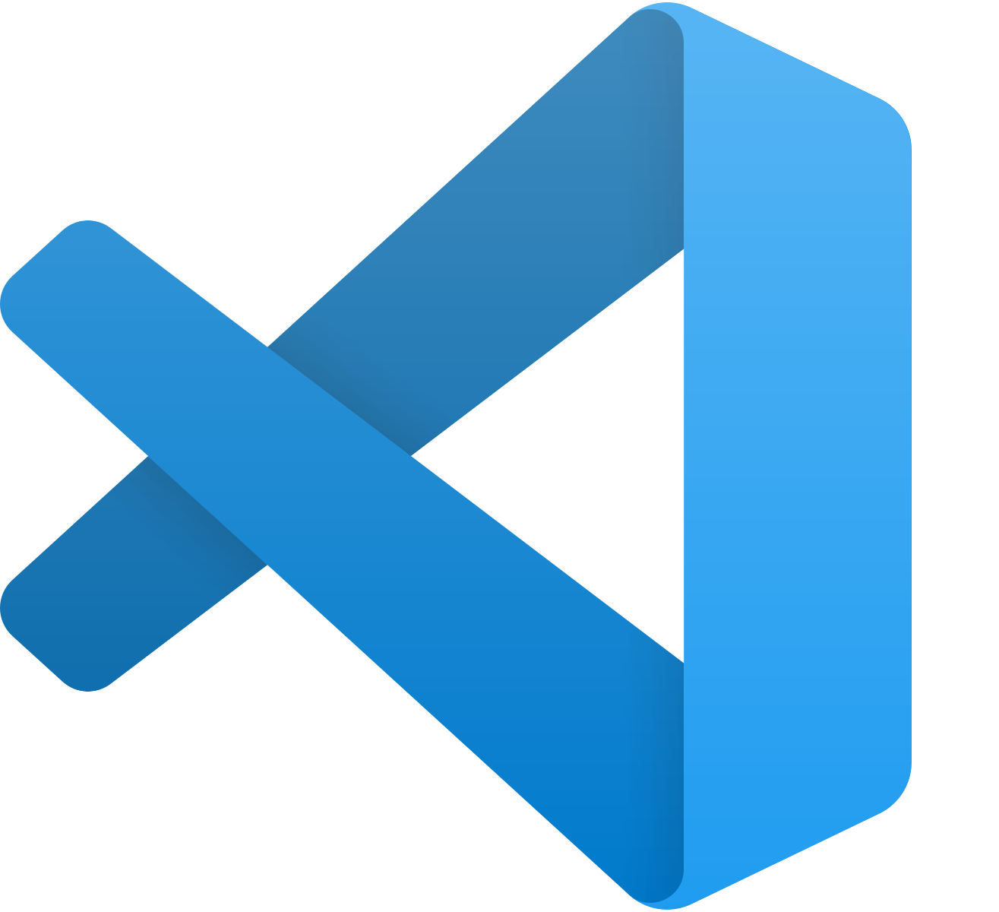
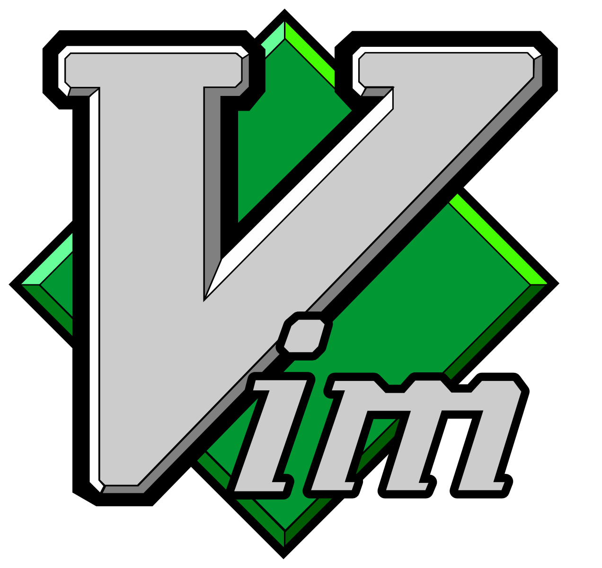
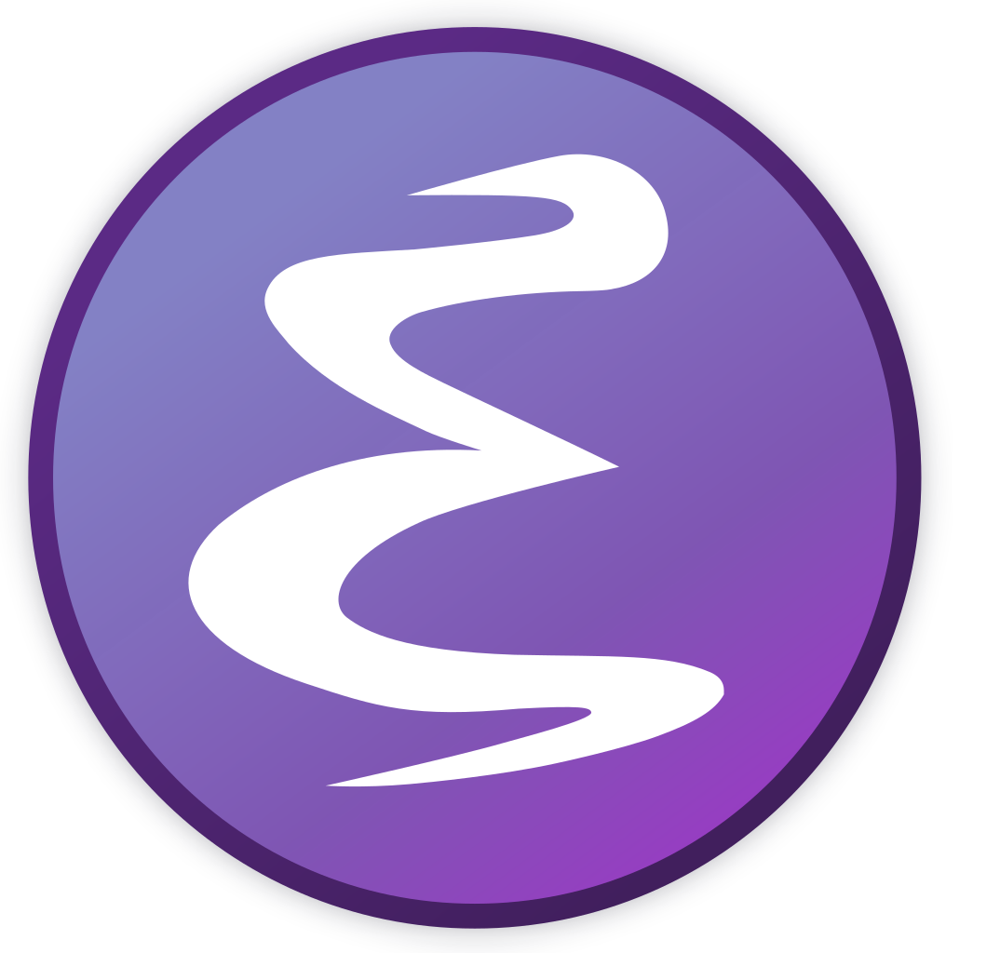

Notepad++

Menurut penjelasan wikipedia Notepad++ adalah sebuah penyunting teks dan penyunting kode sumber yang berjalan di sistem operasi Windows. Notepad++ menggunakan komponen Scintilla untuk dapat menampilkan dan menyuntingan teks dan berkas kode sumber berbagai bahasa pemrograman.
Jadi, Notepad++ adalah suatu text editor yang berjalan pada Operating System(OS) Windows. Notepad++ disini menggunakan komponen-komponen Scintilla agar dapat menampilkan dan menyunting text dan berkas source code berbagai bahasa pemrograman. Notepad++ didistribusikan sebagai Free Software (gratis) Proyek ini dilayani oleh Sourceforge.net dengan telah diunduh lebih dari 27 juta kali dan dua kali memenangkan penghargaan SourceForge Community Choice Award for Best Developer Tool.
Pengembang dari Notepad++ disini adan Don Ho yang diriliskan pada tanggal 24 November 2003,dengan memiliki license dari GNU General Public License dengan ukuran program yang kecil yaitu 5.5MB. Bahasa pemrograman yang didukung oleh notepad++ adalah bahasa C++ karena fungsi-fungsinya yang dimasukan kedalam daftar fungsi dan kata-katanya akan berubah sesuai dengan makna kata C++.
Sublime Text

Sublime Text adalah aplikasi editor untuk kode dan teks yang dapat berjalan diberbagai platform operating system dengan menggunakan teknologi Phyton API. Terciptanya aplikasi ini terinspirasi dari aplikasi Vim, Aplikasi ini sangatlah fleksibel dan powerfull. Fungsionalitas dari aplikasi ini dapat dikembangkan dengan menggunakan sublime-packages. Sublime Text bukanlah aplikasi opensource dan juga aplikasi yang dapat digunakan dan didapatkan secara gratis, akan tetapi beberapa fitur pengembangan fungsionalitas (packages) dari aplikasi ini merupakan hasil dari temuan dan mendapat dukungan penuh dari komunitas serta memiliki lisensi aplikasi gratis.
Sublime Text mendukung berbagai bahasa pemrograman dan mampu menyajikan fitur syntax highlight hampir di semua bahasa pemrogramman yang didukung ataupun dikembangkan oleh komunitas seperti; C, C++, C#, CSS, D, Dylan, Erlang, HTML, Groovy, Haskell, Java, JavaScript, LaTeX, Lisp, Lua, Markdown, MATLAB, OCaml, Perl, PHP, Python, R, Ruby, SQL, TCL, Textile and XML. Biasanya bagi bahasa pemrograman yang didukung ataupun belum terdukung secara default dapat lebih dimaksimalkan atau didukung dengan menggunakan add-ons yang bisa didownload sesuai kebutuhan user.
Visual Studio Code

Visual Studio Code adalah editor kode sumber yang dikembangkan oleh Microsoft untuk Windows , Linux dan macOS . Ini termasuk dukungan untuk debugging, kontrol Git yang tertanam dan GitHub, penyorotan sintaksis, penyelesaian kode cerdas, snippet, dan refactoring kode. Ini sangat dapat disesuaikan, memungkinkan pengguna untuk mengubah tema , pintasan keyboard , preferensi, dan menginstal ekstensi yang menambah fungsionalitas tambahan. Kode sumber adalah sumber bebas dan terbuka dan dirilis di bawah Lisensi MIT permisif. Binari yang dikompilasi adalah freeware dan gratis untuk penggunaan pribadi atau komersial.
Visual Studio Code didasarkan pada Electron, kerangka kerja yang digunakan untuk mengembangkan aplikasi Node.js untuk desktop yang berjalan pada mesin tata letak Blink. Meskipun menggunakan kerangka Elektron, perangkat lunak tidak menggunakan Atom dan sebagai gantinya mempekerjakan komponen editor yang sama (kode nama "Monaco") yang digunakan dalam Azure DevOps (sebelumnya disebut Visual Studio Online dan Layanan Tim Visual Studio).
Vim

Vim (Vi iMproved) merupakan suatu teks editor yang digunakan untuk mengolah suatu text, dengan menggunakan vim dapat melakukan pembuatan tulisan maupun kode program. Penggunaan vim lebih ditekankan untuk menulis kode program.
Secara umum untuk menuliskan kode program menggunakan text editor berbasis GUI, seperti Sublime.Pengguanaan vim dapat di lakukan ketika menulis kode program dengan cepat, biasanya lebih ditekan untuk pengeditan kode program. Vim layaknya teks editor lain, namun untuk melakukan suatu perintah tidak menggunakan suatu menu tapi penggunakan perintah berbasis console.
Vim dapat dijalankan di semua sistem operasi, baik linux, windows maupun MacOS, namun vim sering digunakan pada sistem operasi linux karena mempunya dasar yang sama yaitu penulisan perintah menggunakan terminal.
Emacs

Emacs adalah sekelompok editor teks yang memiliki berbagai fungsi dan dikenal luas oleh kalangan pemrogram komputer dan pengguna komputer lainnya. Versi aslinya ditulis oleh Richard Stallman pada tahun 1975, pada awalnya bersama Guy L. Steele, Jr.. Namanya diambil dari singkatan Editor MACroS. Sejak itu banyak versi Emacs yang telah muncul, tetapi saat ini yang paling banyak dipakai adalah GNU Emacs (juga ditulis oleh Stallman) dan XEmacs.
Pertama kali dirilis pada pertengahan tahun 1970an, Emacs menjadi salah satu pilihan bagi pengguna Linux karena keunggulannya. Emacs dapat dikombinasikan dengan macros untuk keperluan automatisasi. Dibuat oleh Carl Mikkelson, David A. Moon and Guy L. Steele Jr. Kemudian dikembangkan oleh Richard Stallman untuk GNU Project membuat Emacs menjadi salah satu proyek open source yang paling tua dan masih terus dikembangkan hingga sekarang.